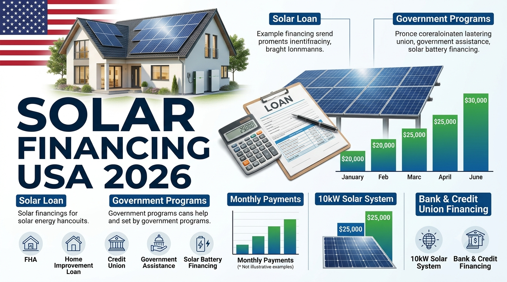

Solar Panel Financing USA 2026: Loans, Government Programs & Monthly Payments
Updated September 2, 2026

For many American homeowners, the biggest barrier to installing solar is not the technology—it is the upfront cost. Solar financing can spread that cost over a fixed term, making a system easier to budget for while the homeowner benefits from lower electricity purchases.
This guide explains the main solar financing options in the USA in 2026, including solar-specific loans, bank and credit-union loans, FHA-related programs, PowerSaver, state and local financing, and the questions homeowners should ask before signing a contract.
Solar Financing Options in the USA
The most common residential approach is a fixed-term installment loan. Depending on the lender, homeowners may also use a general personal loan, home-equity financing, or a solar-specific loan offered through an installer.
| Financing option | How it works | Best for |
|---|---|---|
| Solar-specific loan | Loan arranged specifically for a solar project, often alongside the installation contract. | Homeowners who want to own the system without paying cash upfront. |
| Bank or credit-union loan | Borrow separately from the installer and use the proceeds to pay for the project. | People who want to compare financing independently. |
| Home-equity financing | Uses available home equity to finance improvements. | Eligible homeowners who understand the added risks and costs of secured borrowing. |
| Solar lease | A third party owns the system and the homeowner makes contractual payments. | Homeowners prioritizing low upfront cost rather than system ownership. |
| PPA | The homeowner pays for solar electricity produced under a long-term agreement. | Homeowners who prefer an energy-service model instead of owning equipment. |
The Consumer Financial Protection Bureau says fixed-term installment loans are a common form of residential solar financing. It also notes that general-purpose loans and home-equity products can be available through banks, credit unions and other lenders. citeturn0search0
Government-Backed and Public Solar Financing Programs
The federal government generally does not provide every homeowner with a simple, direct “solar installment loan.” Instead, qualifying homeowners may encounter government-backed mortgage or home-improvement programs, while states and local governments may operate their own financing programs.
FHA Energy Efficient Mortgage
The U.S. Department of Energy describes the FHA Energy Efficient Mortgage as a way to finance eligible energy-efficiency improvements, including solar-related improvements, through an FHA-insured mortgage. Availability and eligibility depend on the specific mortgage and borrower circumstances. citeturn0search10
FHA PowerSaver
PowerSaver has been used as an FHA-supported financing route for residential energy improvements. Program terms, participating lenders and availability should be checked before relying on it for a 2026 project. The CFPB has described PowerSaver as a second-mortgage option for energy-efficient upgrades. citeturn0search0
State and Local Financing
State and local programs can be more relevant than a nationwide federal loan because financing rules vary by location. Homeowners should check their state energy office, utility, housing agency and current incentive databases for available loan programs.
Solar Loan Monthly Payment Examples
The table below is an illustration only. Actual payments depend on APR, loan term, fees, credit profile and the amount financed. These examples are not advertised rates or loan offers.
| Amount financed | Illustrative term | Illustrative APR | Approx. monthly payment |
|---|---|---|---|
| $20,000 | 10 years | 8% | $243/month |
| $25,000 | 10 years | 8% | $303/month |
| $30,000 | 15 years | 8% | $287/month |
| $35,000 | 15 years | 8% | $335/month |
A longer term can reduce the required monthly payment but may substantially increase the total interest paid. Always compare the total amount repaid, not just the advertised monthly payment.
Solar Loan vs Lease vs PPA
| Factor | Solar loan | Lease | PPA |
|---|---|---|---|
| System ownership | Usually homeowner | Third party | Third party |
| Upfront cost | Can be low | Usually low | Usually low |
| Monthly payment | Loan payment | Lease payment | Payment for solar energy produced |
| Long-term ownership benefit | Potentially strongest after loan payoff | Depends on contract | Depends on contract |
| Contract complexity | Loan terms matter | Long-term lease terms matter | Long-term energy-price terms matter |
Watch for Dealer Fees and Financing Markups
This is one of the most important parts of solar financing. The CFPB has warned that some solar-specific loans can include fees that materially increase the loan principal above the cash price of the solar project. It has also warned about confusing presentations of tax-credit assumptions and payment changes. citeturn0search0turn0search3
Do not compare offers only by APR. A loan with a lower advertised APR can still be expensive if the financed principal contains large fees.
Solar Financing Checklist for Homeowners
- Get the cash price of the solar system separately from financing.
- Ask exactly how much money you will borrow.
- Compare at least two or three financing offers when possible.
- Check APR, term, origination fees and total repayment.
- Ask whether the monthly payment can change or be re-amortized.
- Understand what happens if you sell or refinance your home.
- Confirm whether the loan is secured or unsecured and what collateral is involved.
- Verify every tax-credit or incentive assumption against current official guidance and your own tax situation.
- Review the installer contract and financing agreement separately.
The CFPB specifically recommends shopping around and obtaining a written breakdown of the project and its costs rather than accepting a financing offer without comparison. citeturn0search3
FAQ: Solar Financing USA 2026
Can I buy solar panels with monthly payments?
Yes. Solar-specific installment loans, bank loans, credit-union loans and other financing arrangements can allow homeowners to spread the cost over time.
Does the US government give free solar panels?
Be cautious with advertisements promising “free solar.” Government programs generally have specific eligibility rules, and the Department of Energy has warned consumers about misleading free-solar claims.
Is a solar loan better than a lease?
It depends on your priorities. A loan generally means you own the system, while a lease or PPA keeps ownership with a third party. Compare total costs, contract terms, maintenance responsibility and what happens when you sell the home.
Can a bank or credit union finance solar?
Yes. Banks and credit unions can offer general-purpose installment loans, home-equity products or dedicated solar loans depending on the institution.
What should I compare besides the monthly payment?
Compare cash price, financed amount, APR, fees, term, total repayment, payment-change rules, prepayment conditions and the treatment of incentives or tax assumptions.
Final Takeaway
Solar financing in the USA in 2026 is not one single program. Homeowners may have several paths, including solar-specific loans, bank or credit-union financing, home-equity options, FHA-related programs and state or local financing. The best choice depends on eligibility, credit, project cost and long-term plans.
The safest starting point is simple: get the cash price first, then compare the financing. That makes hidden fees and the true cost of borrowing much easier to see.